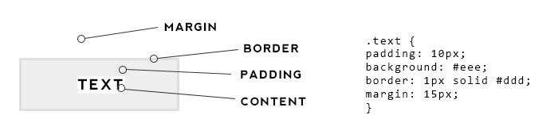

Sprint 2 Technical and Core
What is the difference between Margin, Border, and Padding?
The easiest way to understand is to know the basic concept of box model in design. Box model is a box that wraps around HTML elements and includes the following terms margins, border, padding and content.
Content:- this is where the text and images appear.
Padding:- the space between the content and border is known as padding. Adding padding will add space around the content or element.
Border:- is the outer side of your whole element or a border that goes around the padding and content.
Margin:- clears an area outside the border, its gives space between two elements this is a great option to apply when you don’t want your element to be congested. Margin is also transparent.
